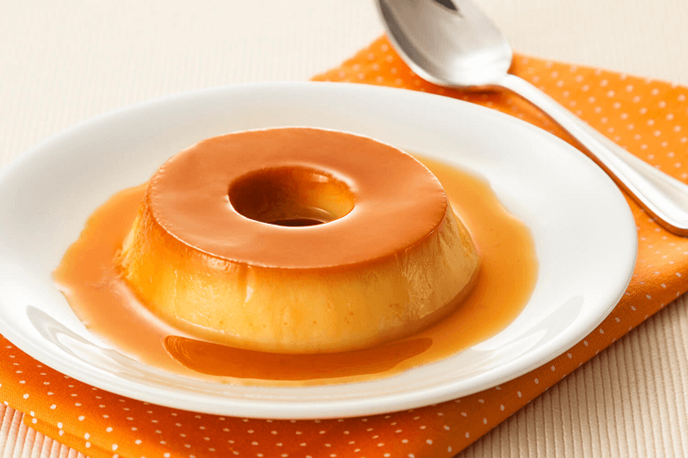

O que NÃO fazer:

-Imagem escura
-Menos qualidade na imagem
-Ângulo ruim de foto
-Não contém o pudim inteiro
-Visualmente desconfortável
Mesmo que o pudim pareça e seja saboroso na vida real, a forma de tirar uma foto pode afetar a vontade do cliente de pagar ou não o preço para comer. Saber disso é essencial para a divulgação do seu negócio de pudim (ou comida no geral).
O que DEVE ser feito:

-Imagem clara
-Boa qualidade na imagem
-Ângulo bom de foto
-Contém o pudim inteiro
-Visualmente confortável
-Possui elementos complementares (por exemplo: colher e pano)
Uma boa imagem é essencial para atrair atenção e despertar interesse das pessoas. Possíveis clientes estarão dispostos a gastar mais dinheiro em algo que parece ser bom, mesmo que seja apenas uma impressão visual. Seguindo as dicas e o exemplo da imagem ao lado, seu pudim será irresistível!